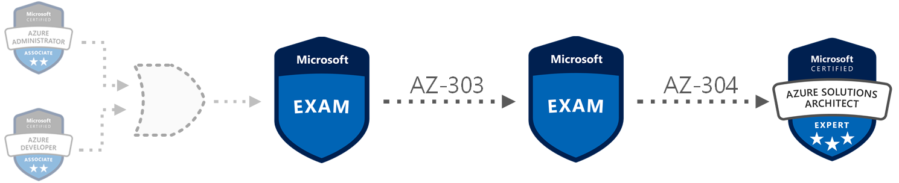
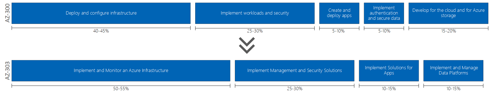

AZ-300 to AZ-303 Exam Changes
February 16, 2020
Estimated reading time: 12 minutes
Third one out in this little series about the 2020 Azure certification exam changes is the new AZ-303 exam that will be replacing the old AZ-300 exam.
The new Skills Measured document that currently are under development can be read at Microsoft’s Certification pages. A link to that document can be found here: Exam AZ-303: Microsoft Azure Architect Technologies - Skills Measured
Right of the bat there is one change that I would have expected, but that did not happen. This round of changes could have been the perfect opportunity for Microsoft to merge the two old exams (300 and 301) to one new combined exam for the Azure Solutions Architect certification.
This new exam contains one less section. Implement authentication and secure data have been removed and some of its content have been moved into other sections of this exam or other exams like the new AZ-104 exam.
This new exam is more focused on architecture, and most if not all references to topics related to code or administration have been moved away from this exam and over to the new AZ-104 and AZ-204 exams.
But even with this new focus on architecture I feel that there are some strange changes as well. All references to autoscaling topics have been removed and are nowhere else to been seen on this new exam. This makes me a bit skeptic. There is also no direct references to autoscaling on the new AZ-304 exam as well. All autoscaling topics are now only present in the developer exam AZ-204. And autoscaling is a topic I personally feel should be a part of the knowledge a Azure Architect has.
On a bit stranger note, the topic containing Azure Confidential Compute have been removed. This service is still in preview, so it was a bit strange that it was a part of the old AZ-300 exam at all.
But anyhow, the exam overall seems like a better exam than the previous one. And that is all that counts!
The highlights of the changes from AZ-300 to AZ-303 are:
- Increased focus on monitoring
- No longer need to learn KQL queries for Log searching
- Azure Monitor Workbooks is out
- Virtual network gateway is out
- Setting up IP Addressing, routes and subnets are out
- No longer a mention creating ARM templates, just modifying it.
- Event Grid is out
- Service Bus is out
- Bastion is in
- On premises integration with Azure virtual network is out
- Configuring ExpressRoute is out
- VPN Gateway is out
- Configuring Virtual WAN is out
- Governance is now a topic (Also mentioned specifically in exam overview)
- Azure Blueprint is in
- Azure Policy is in
- Azure Update Management is in
- Disaster recovery is now a topic.
- App Service WebJobs is out
- App Service networking and deployment slots is in
- Implementing OAuth2 authentication is out
- Azure Confidential Compute is out
- Notification Hub is out
- Event Hub is out
- Azure Relay is out
- No more topics about autoscaling rules or patterns.
So lets move on to checking out the changes in the individual sections of the Skills Measured on the exam now.

Section 1: Implement and Monitor an Azure Infrastructure (50-55%)
This section has been renamed from Deploy and configure infrastructure.
Most likely to highlight the increased focus on monitoring in this section.
But don’t be fooled.
There is still a lot of infrastructure configuring left here.
This section has also had a 10% increase in relevance on the exam. Up from 40-45% to 50-55%. This seems to indicate a increased focus on monitoring from before.
This sections is still the largest one on the exam in term of relevance. And the notable change as mentioned in paragraph above is the increased focus on monitoring. But strangely enough writing Log Analytics queries using KQL seems to not be a part of this increased focus on monitoring.
The section seems to be better structured and not such a large mixture of topics as it were before. But the amount of topics covered in this section are more than in the old exam. So even with the increased exam relevance, I would expect there to be less questions about each specific topic than before.
Some of the other more notable changes are that networking topics like VPN, IP addressing, routing and subnetting are no longer a part of this section or exam as a whole. The new AZ-104 exam now covers these topics instead. This is a welcome change, and this removal fits more into the architect vs administrator separation that I suspect these new exams are created to help.
There also seems to no longer be a need to learn how to create ARM templates from scratch. Just modify existing templates.
Other minor changes are that MFA and fraud detection have been moved from the old Implement workloads and security section to topics in this section.
Network Security Groups have been moved from this sections to new Section 2: Implement Management and Security Solutions.
Since MFA and Fraud detection now are a part of this larger section, could we expect there to be less questions about these topics maybe?
- 1.1 Implement cloud infrastructure monitoring
- Monitor security
- Monitor performance
- Configure diagnostic settings on resources
- Create a performance baseline for resources
- Monitor for unused resources
- Monitor performance capacity
- Visualize diagnostics data using Azure Monitor
- Monitor health and availability
- Monitor networking
- Monitor service health
- Monitor cost
- Monitor spend
- Report on spend
- Configure advanced logging
- Implement and configure Azure Monitor insights, including App Insights, Networks, Containers
- Configure a Log Analytics workspace
- Configure logging for workloads
- Initiate automated responses by using Action Groups
- Configure and manage advanced alerts
- Collect alerts and metrics across multiple subscriptions
- View Alerts in Azure Monitor logs
- 1.2 Implement storage accounts
- Select storage account options based on a use case
- Configure Azure Files and blob storage
- Configure network access to the storage account
- Implement Shared Access Signatures and access policies
- Implement Azure AD authentication for storage
- Manage access keys
- Implement Azure storage replication
- Implement Azure storage account failover
- 1.3 Implement VMs for Windows and Linux
- Configure High Availability
- Configure storage for VMs
- Select virtual machine size
- Implement Azure Dedicated Hosts
- Deploy and configure scale sets
- Configure Azure Disk Encryption
- 1.4 Automate deployment and configuration of resources
- Save a deployment as an Azure Resource Manager template
- Modify Azure Resource Manager template
- Evaluate location of new resources
- Configure a virtual disk template
- Deploy from a template
- Manage a template library
- Create and execute an automation runbook
- 1.5 Implement virtual networking
- Implement VNet to VNet connections
- Implement VNet peering
- 1.6 Implement Azure Active Directory
- Add custom domains
- Configure Azure AD Identity Protection
- Implement self-service password reset
- Implement Conditional Access including MFA
- Configure user accounts for MFA
- Configure fraud alerts
- Configure bypass options
- Configure Trusted IPs
- Configure verification methods
- Implement and manage guest accounts
- Manage multiple directories
- 1.7 Implement and manage hybrid identities
- Install and configure Azure AD Connect
- Identity synchronization options
- Configure and manage password sync and password writeback
- Configure single sign-on
- Use Azure AD Connect HealthSection 2: Implement Management and Security Solutions (25-30%)
This section has received a rename and maybe also the largest revamp of all the sections in this this exam from the old.
This could have something to do with the removal of the old section Implement authentication and secure data and that this section now covers most topics on this exam related to security and governance.
Most of the old topics covering workloads like Logic Apps and Azure Functions have been removed or moved to Section 3: Implement Solutions for Apps.
Some of the most notable changes are the removal of Event Grid, Service Bus and on premises integration with Azure Virtual Network.
These topics are now only covered in the new AZ-104 and AZ-204 exams.
So some of the old duplicates between AZ-103 and AZ-300 have now been removed.
I enjoyed that there was a bit of overlap between the AZ-103, AZ-203 and the AZ-300 exam before. Since this made it easier to study for it and I already knew a lot from those previous exams. So I am both happy for the new focus and separation between administrator, developer and architect. But also a bit saddened since I think one might have to read a bit more documentation to pass these new exams.
This section also seems to have an increased focus on security after the restructuring.
So I would expect more question about this on the exam.
Topics about Network Security Groups (NSGs) and Application Security Groups (ASGs) have been correctly been moved here to this section from the old Deploy and configure infrastructure section.
Some notable new topics have been added to the exam and is present in this section. The new topics about Governance, Disaster recovery and Azure Update Management are now a part of this section. The section had a mixture of serverless, networking, authentication and access control before that are replaced by these new topics. So expect new questions about Azure Blueprint, Azure Policy and more questions about RBAC.
- 2.1 Manage workloads in Azure
- Migrate workloads using Azure Migrate
- Assess infrastructure
- Select a migration method
- Prepare the on-premises for migration
- Recommend target infrastructure
- Implement Azure Backup for VMs
- Implement disaster recovery
- Implement Azure Update Management
- 2.2 Implement load balancing and network security
- Implement Azure Load Balancer
- Implement an application gateway
- Implement a Web Application Firewall
- Implement Azure Firewall
- Implement the Azure Front Door Service
- Implement Azure Traffic Manager
- Implement Network Security Groups and Application Security Groups
- Implement Bastion
- 2.3 Implement and manage Azure governance solutions
- Create and manage hierarchical structure that contains management groups, subscriptions and resource groups
- Assign RBAC roles
- Create a custom RBAC role
- Configure access to Azure resources by assigning roles
- Configure management access to Azure
- Interpret effective permissions
- Set up and perform an access review
- Implement and configure an Azure Policy
- Implement and configure an Azure Blueprint
- 2.4 Manage security for applications
- Implement and configure KeyVault
- Implement and configure Azure AD Managed Identities
- Register and manage applications in Azure ADSection 3: Implement Solutions for Apps (10-15%)
This section has also received a rename. Renamed from Create and deploy apps in the old exam.
The exam relevance of this section has also been increased by 5% from 5-10% to 10-15%.
The increased amount of topics covered in this section is the likely answer for the increased relevance.
The AZ-303 draft especially mentions that Service Fabric is not a part of the exam. But that was not the case in the old AZ-300 exam ether. So I was a bit confused about that note. But still make a note that even on this exam Microsoft seems to let the focus shift away from Azure Service Fabric. I have called this service “dead” for a long time, but it still get updated from time to time. But this is a service that I very rarely recommend to anyone anymore.
A more notable change is that App Services WebJobs have been removed as a topic and the topics about diagnostics and logging have been merged into topics in the new Section 1: Implement and Monitor an Azure Infrastructure.
Using App Service Deployment slots and setting up networking for a App Service have been added instead as topics.
Other new topics in this section are topics about managing Logic Apps and Azure Functions that have been moved from the old Implement workloads and security section.
The topic about having to manage container settings by using code are also no longer mentioned. So this cleans out last remnants of developer related topics in the old AZ-300 exam, and I would no longer expect any questions about code related stuff on this new exam. Just scripting.
Another change that needs to be mentioned is that the topic for creating API documentation have been removed. I thought this was a misplaced topic in the old exam. So that was a welcome change for a requirement that felt very strange before.
All in all, this section now seem more focused on purely implementing, creating and configuring services.
- 3.1 Implement an application infrastructure
- Create and configure Azure App Service
- Create an App Service Web App for Containers
- Create and configure an App Service plan
- Configure an App Service
- Configure networking for an App Service
- Create and manage deployment slots
- Implement Logic Apps
- Implement Azure Functions
- 3.2 Implement container-based applications
- Create a container image
- Configure Azure Kubernetes Service
- Publish and automate image deployment to the Azure Container Registry
- Publish a solution on an Azure Container InstanceSection 4 Implement and Manage Data Platforms (10-15%)
This section is also renamed from an old section: Develop for the cloud and for Azure storage.
It has received a 5% decrease in exam relevance, but it also contains a lot less topics than before.
The section heavily modified. There are many topics that have been removed.
Like Azure Event Grid, Azure Relay, Notification Hub, Event hub and Service Bus.
Basically the the whole of Setting up message-based integration architecture subsection have been removed.
This is in my opinion a very good change.
This was duplicate topics with the old AZ-103 exam.
The topics are now only present in AZ-204.
A very strange and particular change is that all references to autoscaling topics have been removed from this exam. I personally think that autoscaling is a integral part in the tool belt for an Azure Architect. So I am a bit puzzled about this.
This new renamed section now only covers Azure SQL and NoSQL using Cosmos DB and Azure Table Storage. So even with the 5% decrease in exam relevance / number of questions we can expect more questions about Azure SQL and Cosmos DB particular. And again as in the AZ-204 exam, Microsoft seems to be doubling down on Azure Cosmos DB and want the certified developers and architects to know more about this service.
- 4.1 Implement NoSQL databases
- Configure storage account tables
- Select appropriate CosmosDB APIs
- Set up replicas in CosmosDB
- 4.2 Implement Azure SQL databases
- Configure Azure SQL database settings
- Implement Azure SQL Database managed instances
- Configure HA for an Azure SQL database
- Publish an Azure SQL database